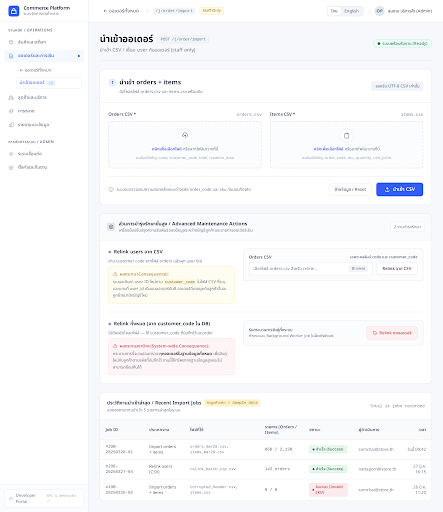admin · ออเดอร์และการเงินCommerce Platform - Order Import (/j/order/import)/j/order/importเปิดแบบ HTML · เปิดโปรเจกต์ Stitch
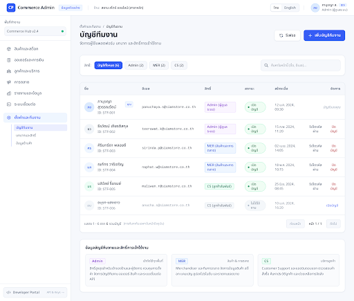admin · ตั้งค่าและทีมงานบัญชีทีมงาน - Commerce Platform (/settings/staff)/settings/staffเปิดแบบ HTML · เปิดโปรเจกต์ Stitch
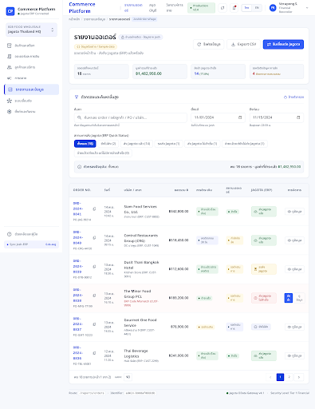admin · รายงานและข้อมูลรายงานออเดอร์ - Commerce Platform/reports/ordersเปิดแบบ HTML · เปิดโปรเจกต์ Stitch
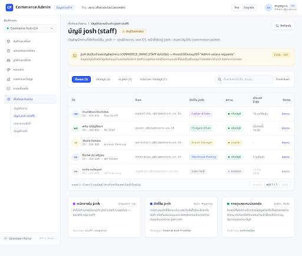admin · ตั้งค่าและทีมงานบัญชีทีมงานร้านค้า - Commerce Platform (/settings/josh-staff)/settings/josh-staffเปิดแบบ HTML · เปิดโปรเจกต์ Stitch
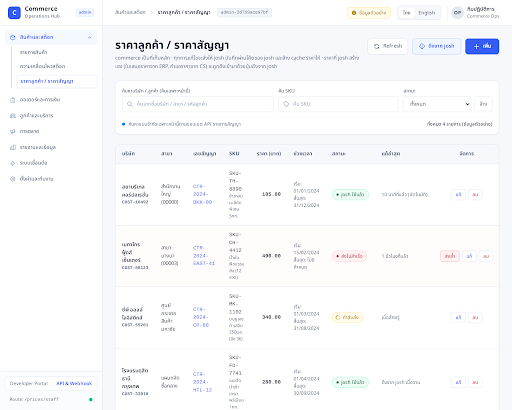admin · สินค้าและสต็อกราคาลูกค้า / ราคาสัญญา (StaffPrices)/prices/staffเปิดแบบ HTML · เปิดโปรเจกต์ Stitch
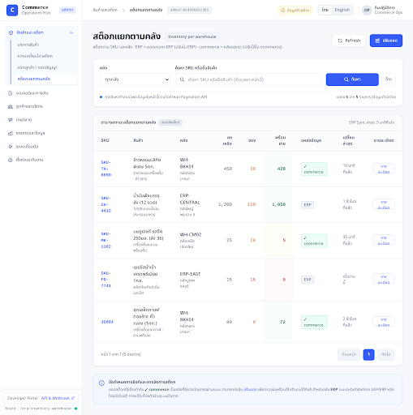admin · สินค้าและสต็อกสต็อกแยกตามคลัง (Inventory per warehouse)/erp/inventory-warehouseเปิดแบบ HTML · เปิดโปรเจกต์ Stitch
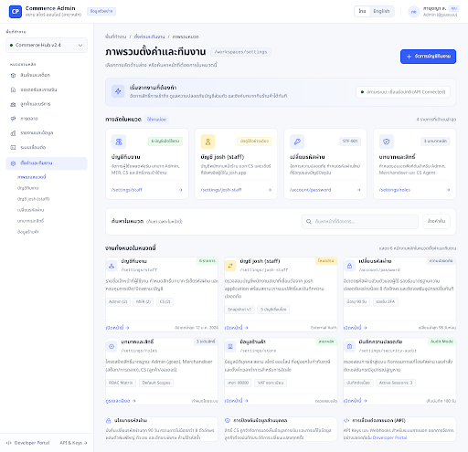admin · ตั้งค่าและทีมงานภาพรวมตั้งค่าและทีมงาน - Commerce Platform (/workspaces/settings)/workspaces/settingsเปิดแบบ HTML · เปิดโปรเจกต์ Stitch
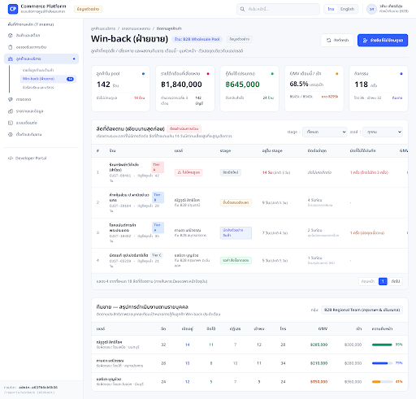admin · ลูกค้าและบริการติดตามลูกค้าเก่า (Winback)/reports/winbackเปิดแบบ HTML · เปิดโปรเจกต์ Stitch
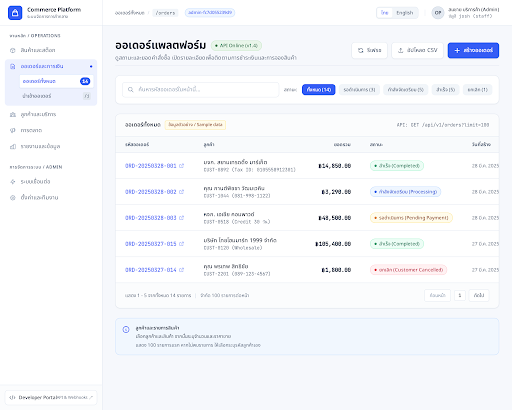admin · ออเดอร์และการเงินCommerce Platform - Platform Orders (/orders)/ordersเปิดแบบ HTML · เปิดโปรเจกต์ Stitch
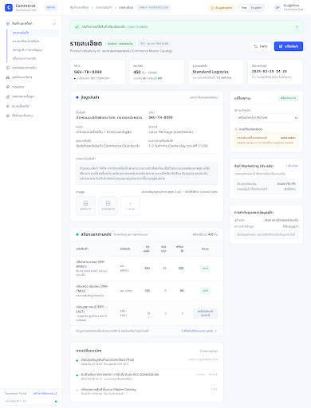admin · สินค้าและสต็อกรายละเอียดสินค้า (ProductDetail)/products/:idเปิดแบบ HTML · เปิดโปรเจกต์ Stitch
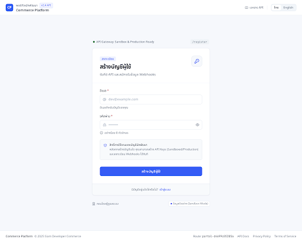portal · Developer PortalCommerce Platform - Developer Portal Register/registerเปิดแบบ HTML · เปิดโปรเจกต์ Stitch
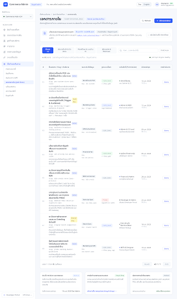admin · ตั้งค่าและทีมงานเอกสารภายใน - Commerce Platform (/josh/internal_docs)/josh/internal_docsเปิดแบบ HTML · เปิดโปรเจกต์ Stitch
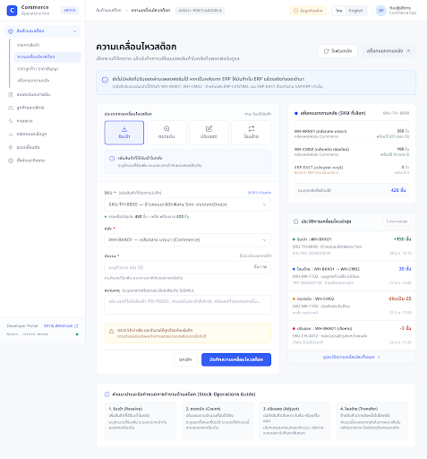admin · สินค้าและสต็อกความเคลื่อนไหวสต็อก (StockMoves - /stock-moves)/stock-movesเปิดแบบ HTML · เปิดโปรเจกต์ Stitch
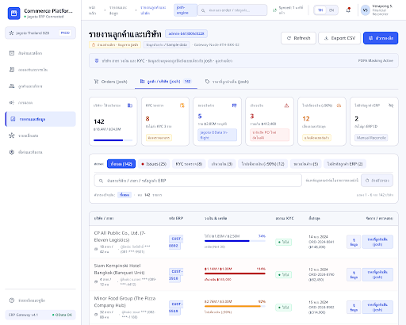admin · รายงานและข้อมูลรายงานลูกค้าและบริษัท - Commerce Platform/reports/customersเปิดแบบ HTML · เปิดโปรเจกต์ Stitch
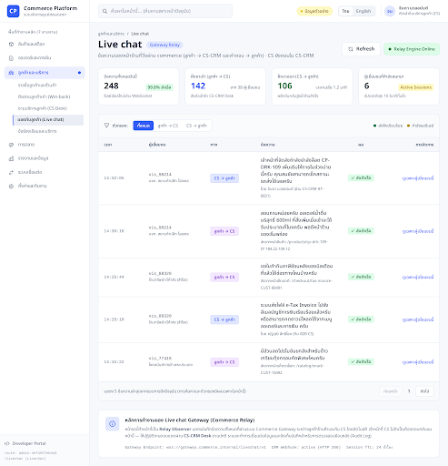admin · ลูกค้าและบริการแชตกับลูกค้า (Live chat)/livechatเปิดแบบ HTML · เปิดโปรเจกต์ Stitch
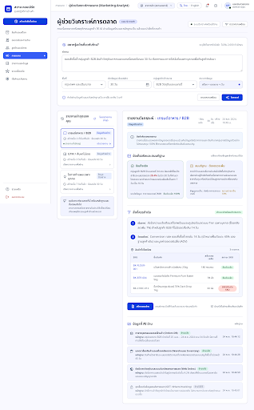admin · การตลาดผู้ช่วยวิเคราะห์การตลาด (Marketing Analyst)/marketing/analystเปิดแบบ HTML · เปิดโปรเจกต์ Stitch
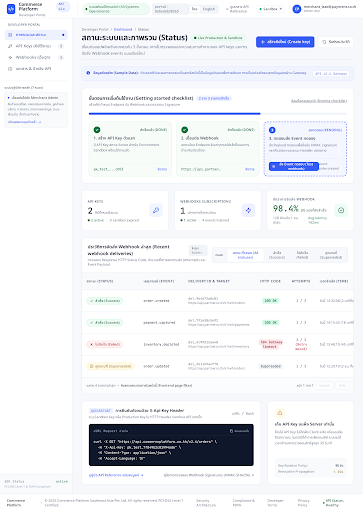portal · Developer PortalCommerce Platform - Developer Portal Dashboard (Status)/เปิดแบบ HTML · เปิดโปรเจกต์ Stitch
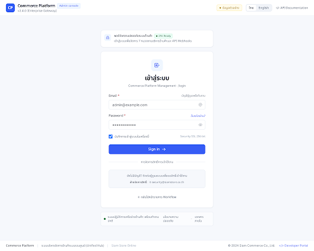admin · ตั้งค่าและทีมงานเข้าสู่ระบบ - Commerce Platform (/login)/loginเปิดแบบ HTML · เปิดโปรเจกต์ Stitch
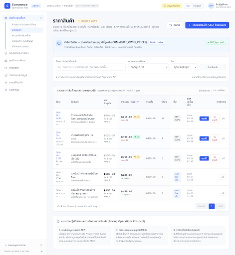admin · สินค้าและสต็อกราคาสินค้า (ProductPrices - /product-prices)/product-pricesเปิดแบบ HTML · เปิดโปรเจกต์ Stitch
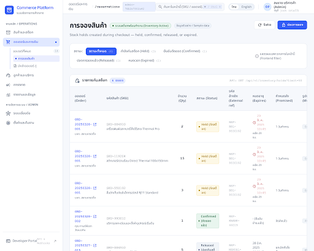admin · ออเดอร์และการเงินCommerce Platform - Reservations (/reservations)/reservationsเปิดแบบ HTML · เปิดโปรเจกต์ Stitch
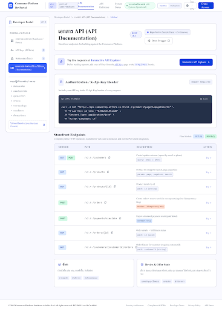portal · Developer PortalCommerce Platform - Developer Portal Docs (Method)/docsเปิดแบบ HTML · เปิดโปรเจกต์ Stitch
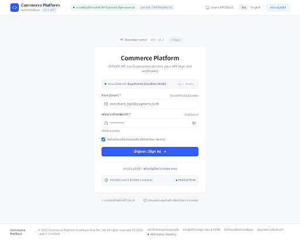portal · Developer PortalCommerce Platform - Developer Portal Login/loginเปิดแบบ HTML · เปิดโปรเจกต์ Stitch
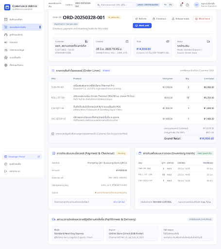admin · ออเดอร์และการเงินCommerce Platform - Order Detail (/orders/:id)/orders/:idเปิดแบบ HTML · เปิดโปรเจกต์ Stitch
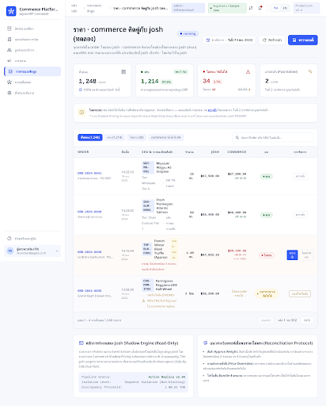admin · รายงานและข้อมูลราคา · commerce คิดคู่กับ josh (ทดลอง) - Commerce Platform/reports/price-shadowเปิดแบบ HTML · เปิดโปรเจกต์ Stitch
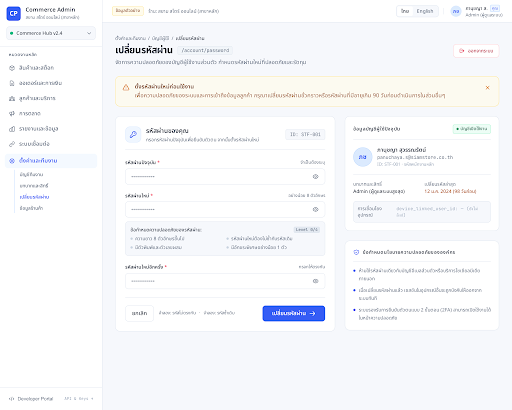admin · ตั้งค่าและทีมงานเปลี่ยนรหัสผ่าน - Commerce Platform (/account/password)/account/passwordเปิดแบบ HTML · เปิดโปรเจกต์ Stitch
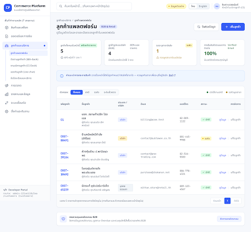admin · ลูกค้าและบริการลูกค้าแพลตฟอร์ม (Platform Customers)/customersเปิดแบบ HTML · เปิดโปรเจกต์ Stitch
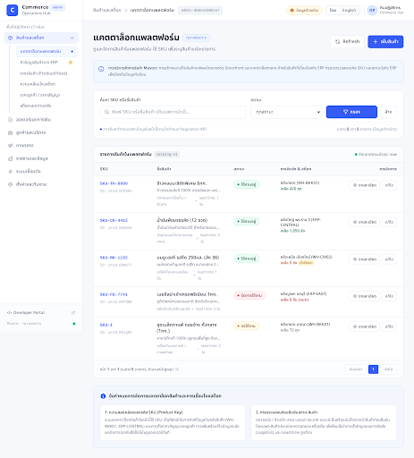admin · สินค้าและสต็อกแคตตาล็อกแพลตฟอร์ม (/products)/productsเปิดแบบ HTML · เปิดโปรเจกต์ Stitch
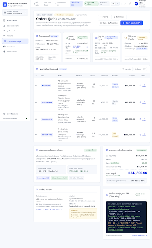admin · รายงานและข้อมูลOrders (josh) - JoshOrderDetail/reports/orders/:idเปิดแบบ HTML · เปิดโปรเจกต์ Stitch
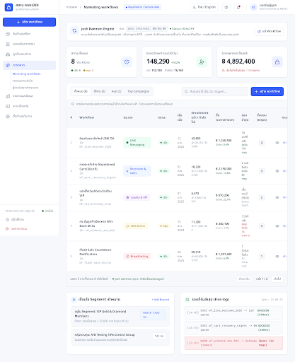admin · การตลาดเวิร์กโฟลว์การตลาด - Siam Commerce/marketing/workflowsเปิดแบบ HTML · เปิดโปรเจกต์ Stitch
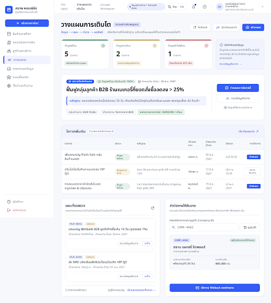admin · การตลาดวางแผนการเติบโต - Siam Commerce/marketing/growthเปิดแบบ HTML · เปิดโปรเจกต์ Stitch
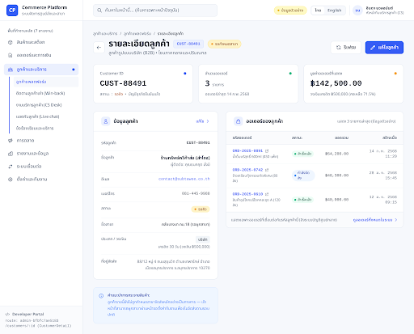admin · ลูกค้าและบริการรายละเอียดลูกค้า (CustomerDetail)/customers/:idเปิดแบบ HTML · เปิดโปรเจกต์ Stitch
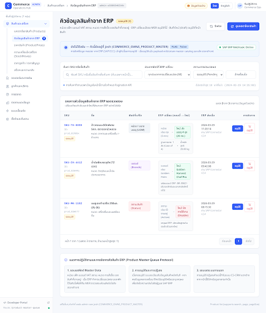admin · สินค้าและสต็อกคิวข้อมูลสินค้าจาก ERP (ProductMasterQueue - /product-master-queue)/product-master-queueเปิดแบบ HTML · เปิดโปรเจกต์ Stitch
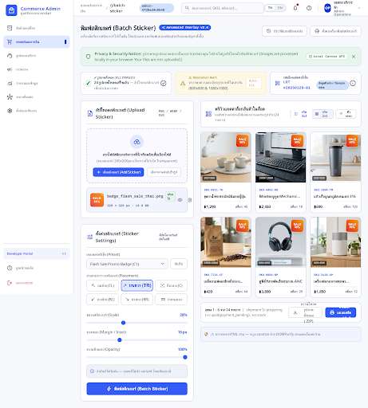admin · ออเดอร์และการเงินCommerce Platform - Batch Sticker (/j/batch-sticker)/j/batch-stickerเปิดแบบ HTML · เปิดโปรเจกต์ Stitch
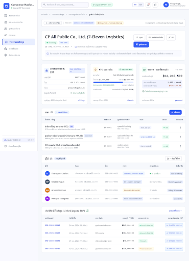admin · รายงานและข้อมูลลูกค้า / บริษัท (josh) - JoshCustomerDetail/reports/customers/:idเปิดแบบ HTML · เปิดโปรเจกต์ Stitch
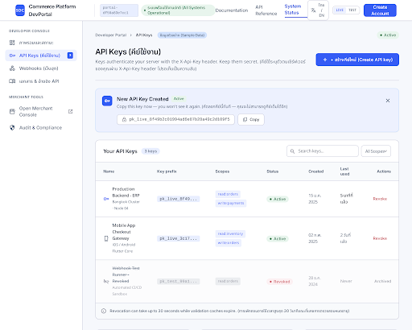portal · Developer PortalCommerce Platform - Developer Portal API Keys (Status)/keysเปิดแบบ HTML · เปิดโปรเจกต์ Stitch
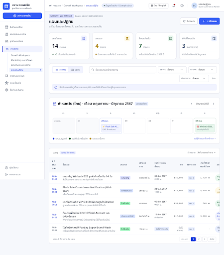admin · การตลาดแผนและปฏิทิน - Siam Commerce/marketing/growth/plansเปิดแบบ HTML · เปิดโปรเจกต์ Stitch
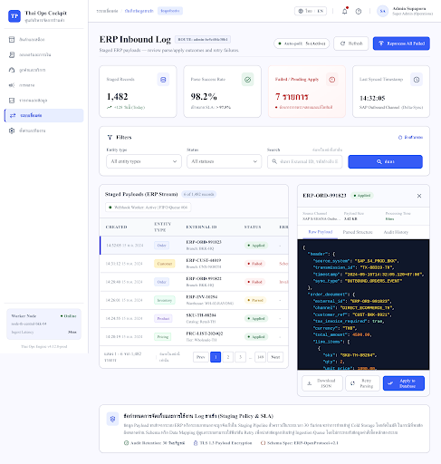admin · ระบบเชื่อมต่อบันทึกข้อมูลขาเข้า/erp/inbound-logเปิดแบบ HTML · เปิดโปรเจกต์ Stitch
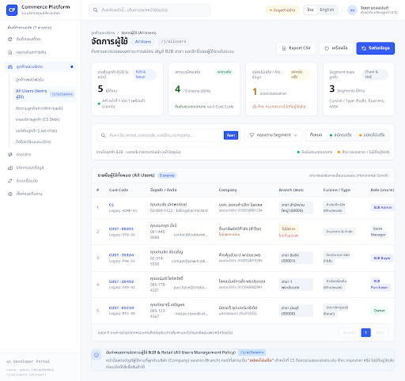admin · ลูกค้าและบริการจัดการผู้ใช้ (All Users)/j/allusersเปิดแบบ HTML · เปิดโปรเจกต์ Stitch
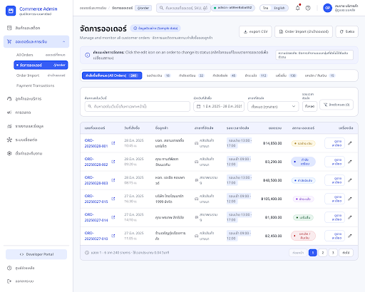admin · ออเดอร์และการเงินCommerce Platform - จัดการออเดอร์ (/j/order)/j/orderเปิดแบบ HTML · เปิดโปรเจกต์ Stitch
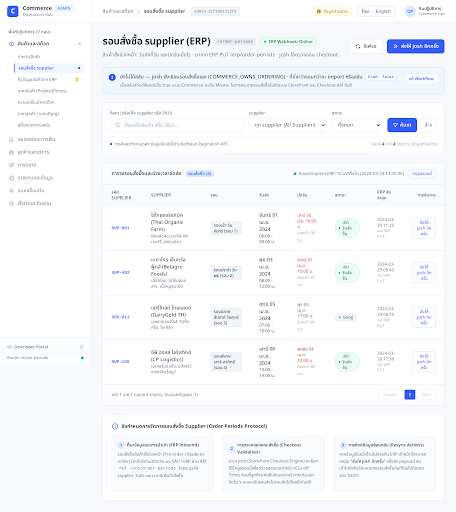admin · สินค้าและสต็อกรอบสั่งซื้อ supplier (SupplierOrderPeriods - /order-periods)/order-periodsเปิดแบบ HTML · เปิดโปรเจกต์ Stitch
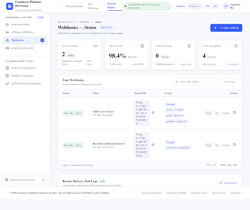portal · Developer PortalCommerce Platform - Developer Portal Webhooks (Status)/webhooksเปิดแบบ HTML · เปิดโปรเจกต์ Stitch
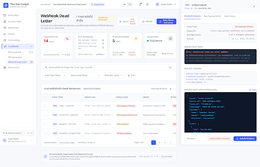admin · ระบบเชื่อมต่อรายการส่งไม่สำเร็จ/erp/webhook-dead-letterเปิดแบบ HTML · เปิดโปรเจกต์ Stitch
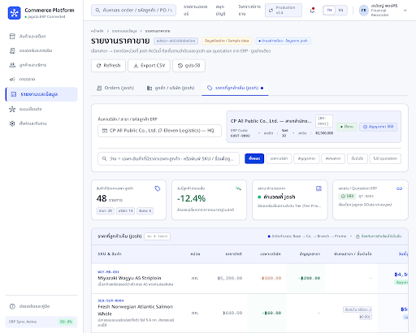admin · รายงานและข้อมูลรายงานราคาขาย - Commerce Platform/reports/pricesเปิดแบบ HTML · เปิดโปรเจกต์ Stitch
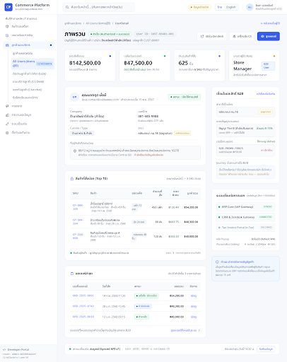admin · ลูกค้าและบริการภาพรวมผู้ใช้ (UserDetail)/j/allusers/:userIdเปิดแบบ HTML · เปิดโปรเจกต์ Stitch
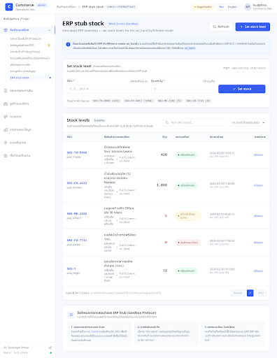admin · สินค้าและสต็อกERP stub stock (/erp-stock)/erp-stockเปิดแบบ HTML · เปิดโปรเจกต์ Stitch
admin · การตลาดResearch - สร้างแผน Growth - Siam Commerce/marketing/growth/plans/newเปิดแบบ HTML · เปิดโปรเจกต์ Stitch
admin · ออเดอร์และการเงินCommerce Platform - Order Detail (/j/order/:ordersId)/j/order/:ordersIdเปิดแบบ HTML · เปิดโปรเจกต์ Stitch
admin · รายงานและข้อมูลรายงานสินค้า - Commerce Platform/reports/productsเปิดแบบ HTML · เปิดโปรเจกต์ Stitch
admin · ลูกค้าและบริการระดับสมาชิก (Membership Tiers)/j/membership-tiersเปิดแบบ HTML · เปิดโปรเจกต์ Stitch
admin · การตลาดResearch - รายละเอียดแผน Growth - Siam Commerce/marketing/growth/plans/:idเปิดแบบ HTML · เปิดโปรเจกต์ Stitch
admin · สินค้าและสต็อกแบรนด์ (Brand Management - /j/brands)/j/brandsเปิดแบบ HTML · เปิดโปรเจกต์ Stitch
admin · ออเดอร์และการเงินCommerce Platform - จัดการการจัดส่ง (/j/shipments)/j/shipmentsเปิดแบบ HTML · เปิดโปรเจกต์ Stitch
admin · การตลาดGrowth Workspace - ผลลัพธ์ของ workflow/marketing/growth/results/:workflowIdเปิดแบบ HTML · เปิดโปรเจกต์ Stitch
admin · ระบบเชื่อมต่อส่ง order ผ่าน commerce (ทดลอง)/erp/jagota-shadowเปิดแบบ HTML · เปิดโปรเจกต์ Stitch
admin · รายงานและข้อมูลสินค้า (josh) - JoshProductDetail/reports/products/:idเปิดแบบ HTML · เปิดโปรเจกต์ Stitch
admin · ออเดอร์และการเงินCommerce Platform - Shipment Detail (/j/shipments/:shipmentId)/j/shipments/:shipmentIdเปิดแบบ HTML · เปิดโปรเจกต์ Stitch
admin · สินค้าและสต็อกจัดการสินค้า (AllProduct - /j/allproducts)/j/allproductsเปิดแบบ HTML · เปิดโปรเจกต์ Stitch
admin · การตลาดGrowth Workspace - GrowthTimeline/marketing/growth/companies/:companyIdเปิดแบบ HTML · เปิดโปรเจกต์ Stitch
admin · รายงานและข้อมูลรายงานยอดขาย - Commerce Platform/reports/salesเปิดแบบ HTML · เปิดโปรเจกต์ Stitch
admin · สินค้าและสต็อกเพิ่มสินค้า (InsertProductForm - /j/product/create)/j/product/createเปิดแบบ HTML · เปิดโปรเจกต์ Stitch
admin · ออเดอร์และการเงินCommerce Platform - จัดการการชำระเงิน (/j/payment-transactions)/j/payment-transactionsเปิดแบบ HTML · เปิดโปรเจกต์ Stitch
admin · ลูกค้าและบริการBot · intent rules (BotIntentRules)/j/bot/intent-rulesเปิดแบบ HTML · เปิดโปรเจกต์ Stitch
admin · รายงานและข้อมูลการเข้าชม - Commerce Platform/reports/trafficเปิดแบบ HTML · เปิดโปรเจกต์ Stitch
admin · ลูกค้าและบริการเพิ่ม Intent Rule (CreateBotIntentRule)/j/bot/intent-rules/createเปิดแบบ HTML · เปิดโปรเจกต์ Stitch
admin · การตลาดWorkflow Editor - Siam Commerce/marketing/workflows/newเปิดแบบ HTML · เปิดโปรเจกต์ Stitch
admin · รายงานและข้อมูลสุขภาพระบบ - Commerce Platform/reports/healthเปิดแบบ HTML · เปิดโปรเจกต์ Stitch
admin · การตลาดWorkflow Editor - Siam Commerce/marketing/workflows/:id/editเปิดแบบ HTML · เปิดโปรเจกต์ Stitch
admin · สินค้าและสต็อกอัปโหลดวิดีโอสินค้า (ProductVideoUpload - /j/product/video-upload)/j/product/video-uploadเปิดแบบ HTML · เปิดโปรเจกต์ Stitch
admin · ออเดอร์และการเงินCommerce Platform - KBank Testing Console (/j/kbank/testing-console)/j/kbank/testing-consoleเปิดแบบ HTML · เปิดโปรเจกต์ Stitch
admin · ลูกค้าและบริการแก้ไข Intent Rule (EditBotIntentRule)/j/bot/intent-rules/edit/:idเปิดแบบ HTML · เปิดโปรเจกต์ Stitch
admin · ออเดอร์และการเงินCommerce Platform - ใบแจ้งหนี้ค้างชำระ (/j/invoices)/j/invoicesเปิดแบบ HTML · เปิดโปรเจกต์ Stitch
admin · สินค้าและสต็อกอัปโหลดรูปสินค้าหลายรายการ (BulkImageUploadPage - /j/product/bulk-image-upload)/j/product/bulk-image-uploadเปิดแบบ HTML · เปิดโปรเจกต์ Stitch
admin · รายงานและข้อมูลกลุ่มลูกค้าเป้าหมาย - Commerce Platform/reports/order-targetgroupเปิดแบบ HTML · เปิดโปรเจกต์ Stitch
admin · ออเดอร์และการเงินCommerce Platform - Credit notes (/j/credit-notes)/j/credit-notesเปิดแบบ HTML · เปิดโปรเจกต์ Stitch
admin · รายงานและข้อมูลภาพรวมรายงานและข้อมูล - Commerce Platform/workspaces/reportsเปิดแบบ HTML · เปิดโปรเจกต์ Stitch
admin · การตลาดWorkflow Scheduled Runs - Siam Commerce/marketing/workflows/:id/scheduled-runsเปิดแบบ HTML · เปิดโปรเจกต์ Stitch
admin · การตลาดWorkflow Enrollments - Siam Commerce/marketing/workflows/:id/enrollmentsเปิดแบบ HTML · เปิดโปรเจกต์ Stitch
admin · ออเดอร์และการเงินCommerce Platform - เครดิตคืน Credit Backs (/j/credit-backs)/j/credit-backsเปิดแบบ HTML · เปิดโปรเจกต์ Stitch
admin · ลูกค้าและบริการBot · workflows (BotWorkflows)/j/bot/workflowsเปิดแบบ HTML · เปิดโปรเจกต์ Stitch
admin · สินค้าและสต็อกแก้ไขสินค้า (EditProduct - /j/product/edit/:id)/j/product/edit/:idเปิดแบบ HTML · เปิดโปรเจกต์ Stitch
admin · ลูกค้าและบริการเพิ่ม Workflow (CreateBotWorkflow)/j/bot/workflows/createเปิดแบบ HTML · เปิดโปรเจกต์ Stitch
admin · ออเดอร์และการเงินCommerce Platform - ใบสมัครเครดิต (/j/credit-terms)/j/credit-termsเปิดแบบ HTML · เปิดโปรเจกต์ Stitch
admin · ลูกค้าและบริการแก้ไข Workflow (EditBotWorkflow)/j/bot/workflows/edit/:idเปิดแบบ HTML · เปิดโปรเจกต์ Stitch
admin · ระบบเชื่อมต่อทดสอบเหตุการณ์ ERP ของร้านค้า/j/erp/webhook-simulatorเปิดแบบ HTML · เปิดโปรเจกต์ Stitch
admin · สินค้าและสต็อกจัดการซัพพลายเออร์ (SupplierList - /j/suppliers)/j/suppliersเปิดแบบ HTML · เปิดโปรเจกต์ Stitch
admin · การตลาดค้นหาตลาดร้านอาหาร - Siam Commerce/marketing/restaurantsเปิดแบบ HTML · เปิดโปรเจกต์ Stitch
admin · สินค้าและสต็อกรายละเอียดสินค้า (ProductDetail - /j/product/:id)/j/product/:idเปิดแบบ HTML · เปิดโปรเจกต์ Stitch
admin · การตลาดงานวิจัยตลาด (Marketing Research) - Siam Commerce/marketing/researchเปิดแบบ HTML · เปิดโปรเจกต์ Stitch
admin · สินค้าและสต็อกเพิ่ม Supplier (CreateSupplier - /j/supplier/create)/j/supplier/createเปิดแบบ HTML · เปิดโปรเจกต์ Stitch
admin · ออเดอร์และการเงินCommerce Platform - คืนสินค้าและคืนเงิน (/j/refunds)/j/refundsเปิดแบบ HTML · เปิดโปรเจกต์ Stitch
admin · ออเดอร์และการเงินCommerce Platform - ตารางรอบส่ง (/j/cs/delivery-schedule)/j/cs/delivery-scheduleเปิดแบบ HTML · เปิดโปรเจกต์ Stitch
admin · สินค้าและสต็อกแก้ไขซัพพลายเออร์ (EditSupplier - /j/supplier/edit/:id)/j/supplier/edit/:idเปิดแบบ HTML · เปิดโปรเจกต์ Stitch
admin · ลูกค้าและบริการเพิ่ม Template (CreateBotTemplate)/j/bot/templates/createเปิดแบบ HTML · เปิดโปรเจกต์ Stitch
admin · ลูกค้าและบริการBot · templates (BotTemplates)/j/bot/templatesเปิดแบบ HTML · เปิดโปรเจกต์ Stitch
admin · การตลาดJourney funnel - Siam Commerce/j/marketing/journey-funnelเปิดแบบ HTML · เปิดโปรเจกต์ Stitch
admin · ลูกค้าและบริการแก้ไข Template (EditBotTemplate)/j/bot/templates/edit/:idเปิดแบบ HTML · เปิดโปรเจกต์ Stitch
admin · ออเดอร์และการเงินCommerce Platform - วางบิล (/j/billing)/j/billingเปิดแบบ HTML · เปิดโปรเจกต์ Stitch
admin · สินค้าและสต็อกคำขอราคา (PriceRequestsAdmin - /j/price-requests)/j/price-requestsเปิดแบบ HTML · เปิดโปรเจกต์ Stitch
admin · ออเดอร์และการเงินCommerce Platform - Jagota Payment Testing (/j/jagota/payment-testing)/j/jagota/payment-testingเปิดแบบ HTML · เปิดโปรเจกต์ Stitch
admin · สินค้าและสต็อกข้อเสนอราคาที่ใช้งาน (ActiveOffersAdmin - /j/active-offers)/j/active-offersเปิดแบบ HTML · เปิดโปรเจกต์ Stitch
admin · การตลาดTemplate ข้อความ - Siam Commerce/j/marketing/notify-templatesเปิดแบบ HTML · เปิดโปรเจกต์ Stitch
admin · ลูกค้าและบริการแก้ไขบริษัท (CompanyEdit)/j/company/edit/:idเปิดแบบ HTML · เปิดโปรเจกต์ Stitch
admin · ลูกค้าและบริการสร้างบริษัท (CreateCompanyAdmin)/j/company/createเปิดแบบ HTML · เปิดโปรเจกต์ Stitch
admin · ออเดอร์และการเงินCommerce Platform - ขอเครดิต (/josh/credit_terms)/josh/credit_termsเปิดแบบ HTML · เปิดโปรเจกต์ Stitch
admin · ออเดอร์และการเงินCommerce Platform - ภาพรวมออเดอร์และการเงิน (/workspaces/orders)/workspaces/ordersเปิดแบบ HTML · เปิดโปรเจกต์ Stitch
admin · การตลาดตั้งค่าเก็บข้อมูลเว็บ - Siam Commerce/j/marketing/scraping-sourcesเปิดแบบ HTML · เปิดโปรเจกต์ Stitch
admin · การตลาดเทียบราคาคู่แข่ง - Siam Commerce/j/marketing/competitor-pricesเปิดแบบ HTML · เปิดโปรเจกต์ Stitch
admin · สินค้าและสต็อกภาพรวมสินค้าและสต็อก (Workspace - /workspaces/catalog)/workspaces/catalogเปิดแบบ HTML · เปิดโปรเจกต์ Stitch
admin · สินค้าและสต็อกข้อมูลซัพพลายเออร์ (JoshBackoffice - /josh/suppliers)/josh/suppliersเปิดแบบ HTML · เปิดโปรเจกต์ Stitch
admin · การตลาดคลังข้อมูลเว็บคู่แข่ง - Siam Commerce/j/marketing/scraped-catalogเปิดแบบ HTML · เปิดโปรเจกต์ Stitch
admin · ลูกค้าและบริการคำขอสินค้าตัวอย่างก่อนสั่งซื้อ (Sample requests)/j/cs/sample-requestsเปิดแบบ HTML · เปิดโปรเจกต์ Stitch
admin · ออเดอร์และการเงินCommerce Platform - Shipments (/josh/shipments)/josh/shipmentsเปิดแบบ HTML · เปิดโปรเจกต์ Stitch
admin · ออเดอร์และการเงินCommerce Platform - Credit notes (/josh/credit_notes)/josh/credit_notesเปิดแบบ HTML · เปิดโปรเจกต์ Stitch
admin · ลูกค้าและบริการคำขอ Admin (AdminAccessQueue)/j/admin-accessเปิดแบบ HTML · เปิดโปรเจกต์ Stitch
admin · ออเดอร์และการเงินCommerce Platform - รายการชำระเงิน (/josh/payments)/josh/paymentsเปิดแบบ HTML · เปิดโปรเจกต์ Stitch
admin · การตลาดตรวจข้อเสนอ - Siam Commerce/j/marketing/offers-checkเปิดแบบ HTML · เปิดโปรเจกต์ Stitch
admin · การตลาดอีเมลต้อนรับลีด - Siam Commerce/j/marketing/welcome-lead-emailเปิดแบบ HTML · เปิดโปรเจกต์ Stitch
admin · ลูกค้าและบริการหมวดที่ย้ายของในตะกร้าได้ (CartMoveCategoriesAdmin)/j/cs/cart-move-categoriesเปิดแบบ HTML · เปิดโปรเจกต์ Stitch
admin · ออเดอร์และการเงินCommerce Platform - เครดิตคืน Credit Backs (/josh/credit_backs)/josh/credit_backsเปิดแบบ HTML · เปิดโปรเจกต์ Stitch
admin · ลูกค้าและบริการภาพรวมลูกค้าและบริการ (Workspace)/workspaces/customersเปิดแบบ HTML · เปิดโปรเจกต์ Stitch
admin · การตลาดสร้าง Smart Link - Siam Commerce/j/smart-links/createเปิดแบบ HTML · เปิดโปรเจกต์ Stitch
admin · การตลาดยังไม่มีข้อมูล - Smart Link Analytics/j/smart-links/analyticsเปิดแบบ HTML · เปิดโปรเจกต์ Stitch
admin · ลูกค้าและบริการคำขอเข้า admin (JoshBackoffice)/josh/admin_accessเปิดแบบ HTML · เปิดโปรเจกต์ Stitch
admin · ออเดอร์และการเงินCommerce Platform - ใบแจ้งหนี้ (/josh/invoices)/josh/invoicesเปิดแบบ HTML · เปิดโปรเจกต์ Stitch
admin · การตลาดแก้ไข Smart Link - Siam Commerce/j/smart-links/edit/:idเปิดแบบ HTML · เปิดโปรเจกต์ Stitch
admin · การตลาดลองใหม่ - แก้ไขหน้าโปรโมชัน - Siam Commerce/j/promotion-pages/:id/editเปิดแบบ HTML · เปิดโปรเจกต์ Stitch
admin · การตลาดสร้างหน้าโปรโมชัน (ลองใหม่) - Siam Commerce/j/promotion-pages/createเปิดแบบ HTML · เปิดโปรเจกต์ Stitch
admin · การตลาดSmart Link Analytics - Siam Commerce/j/smart-links/analytics/:idเปิดแบบ HTML · เปิดโปรเจกต์ Stitch
admin · การตลาดPush campaigns - Siam Commerce/j/marketing/push-campaignsเปิดแบบ HTML · เปิดโปรเจกต์ Stitch
admin · การตลาดเพิ่ม User Segment - Siam Commerce/j/segments/createเปิดแบบ HTML · เปิดโปรเจกต์ Stitch
admin · การตลาดสร้าง Segment ใหม่ (Visual Builder) - Siam Commerce/j/segments/builderเปิดแบบ HTML · เปิดโปรเจกต์ Stitch
admin · การตลาดแก้ไข User Segment - Siam Commerce/j/segments/edit/:idเปิดแบบ HTML · เปิดโปรเจกต์ Stitch
admin · การตลาดแก้ไข Segment (Visual Builder) - Siam Commerce/j/segments/builder/:idเปิดแบบ HTML · เปิดโปรเจกต์ Stitch
admin · การตลาดPromotion product sets - Siam Commerce/j/promotion-product-setsเปิดแบบ HTML · เปิดโปรเจกต์ Stitch
admin · การตลาดกลุ่มเป้าหมาย - สร้างคูปอง - Siam Commerce/j/coupon/createเปิดแบบ HTML · เปิดโปรเจกต์ Stitch
admin · การตลาดสร้าง Promotion Product Set - Siam Commerce/j/promotion-product-sets/createเปิดแบบ HTML · เปิดโปรเจกต์ Stitch
admin · การตลาดแก้ไข Promotion Product Set - Siam Commerce/j/promotion-product-sets/:id/editเปิดแบบ HTML · เปิดโปรเจกต์ Stitch
admin · การตลาดPromotion Mechanics - Siam Commerce/j/promotions-mechanicเปิดแบบ HTML · เปิดโปรเจกต์ Stitch
admin · การตลาดสร้าง Promotion Mechanic - ส่วนลด (Siam Commerce)/j/promotions-mechanic/createเปิดแบบ HTML · เปิดโปรเจกต์ Stitch
admin · การตลาดแก้ไข Promotion Mechanic - ส่วนลด - Siam Commerce/j/promotions-mechanic/:id/editเปิดแบบ HTML · เปิดโปรเจกต์ Stitch
admin · การตลาดข้อมูล Campaign - Siam Commerce/j/promotions/campaigns/createเปิดแบบ HTML · เปิดโปรเจกต์ Stitch
admin · การตลาดNotification Log - Siam Commerce/j/cs/notification-logเปิดแบบ HTML · เปิดโปรเจกต์ Stitch
admin · การตลาดสถานะ - CampaignDetail - Siam Commerce/j/promotions/campaigns/:idเปิดแบบ HTML · เปิดโปรเจกต์ Stitch
admin · การตลาดProduct notify funnel - Siam Commerce/j/cs/product-notify-funnelเปิดแบบ HTML · เปิดโปรเจกต์ Stitch
admin · การตลาดNotification Catalog - Siam Commerce/j/cs/notification-catalogเปิดแบบ HTML · เปิดโปรเจกต์ Stitch
admin · การตลาด · ใช้แบบร่วมภาพรวมการตลาด/workspaces/marketingภาพแบบอ้างอิงของ /workspaces/orders ใช้รูปแบบเดียวกันในหน้าแอปนี้เปิดแบบอ้างอิง HTML · รายละเอียดการใช้แบบร่วม
admin · การตลาด · ใช้แบบร่วมCoupons/josh/couponsภาพแบบอ้างอิงของ /josh/credit_notes ใช้รูปแบบเดียวกันในหน้าแอปนี้เปิดแบบอ้างอิง HTML · รายละเอียดการใช้แบบร่วม
admin · การตลาด · ใช้แบบร่วมCampaigns/josh/campaignsภาพแบบอ้างอิงของ /josh/credit_notes ใช้รูปแบบเดียวกันในหน้าแอปนี้เปิดแบบอ้างอิง HTML · รายละเอียดการใช้แบบร่วม
admin · การตลาด · ใช้แบบร่วมSegments/josh/segmentsภาพแบบอ้างอิงของ /josh/credit_notes ใช้รูปแบบเดียวกันในหน้าแอปนี้เปิดแบบอ้างอิง HTML · รายละเอียดการใช้แบบร่วม
admin · การตลาด · ใช้แบบร่วมNotification delivery stats/j/cs/notification-statsภาพแบบอ้างอิงของ /j/cs/product-notify-funnel ใช้รูปแบบเดียวกันในหน้าแอปนี้เปิดแบบอ้างอิง HTML · รายละเอียดการใช้แบบร่วม